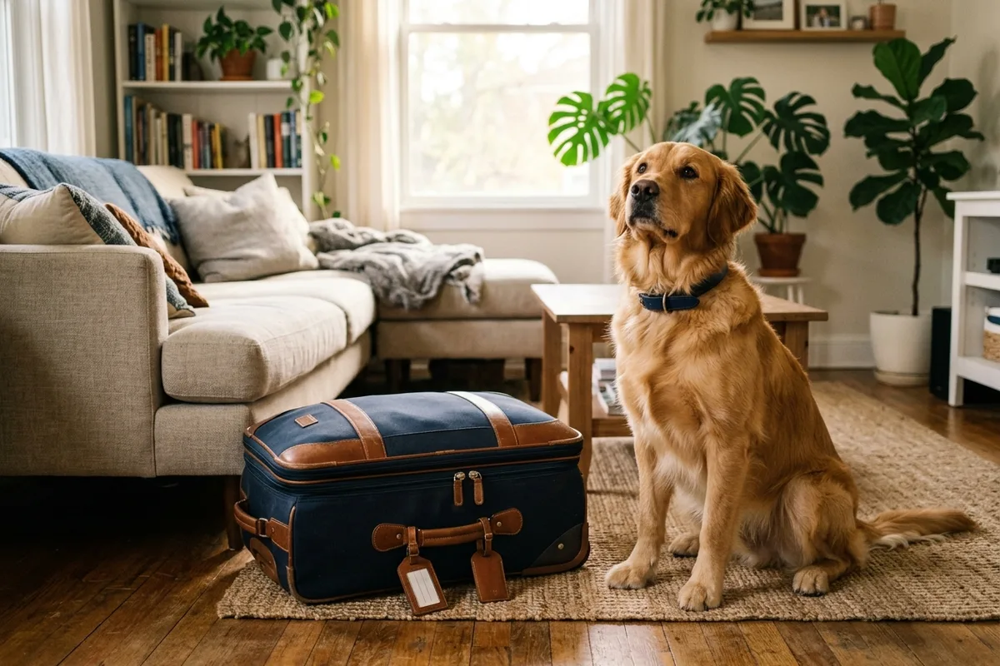
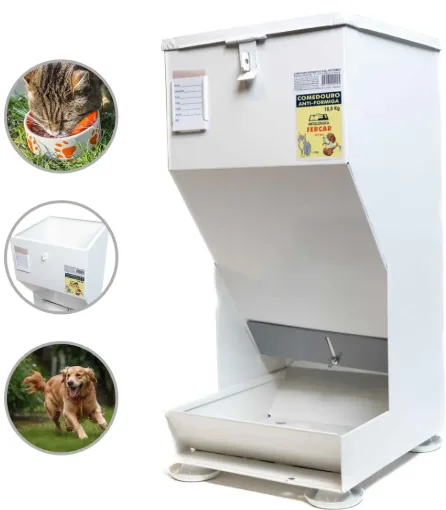
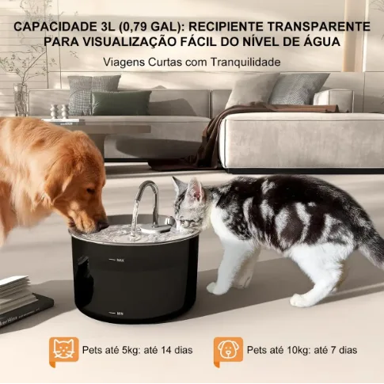
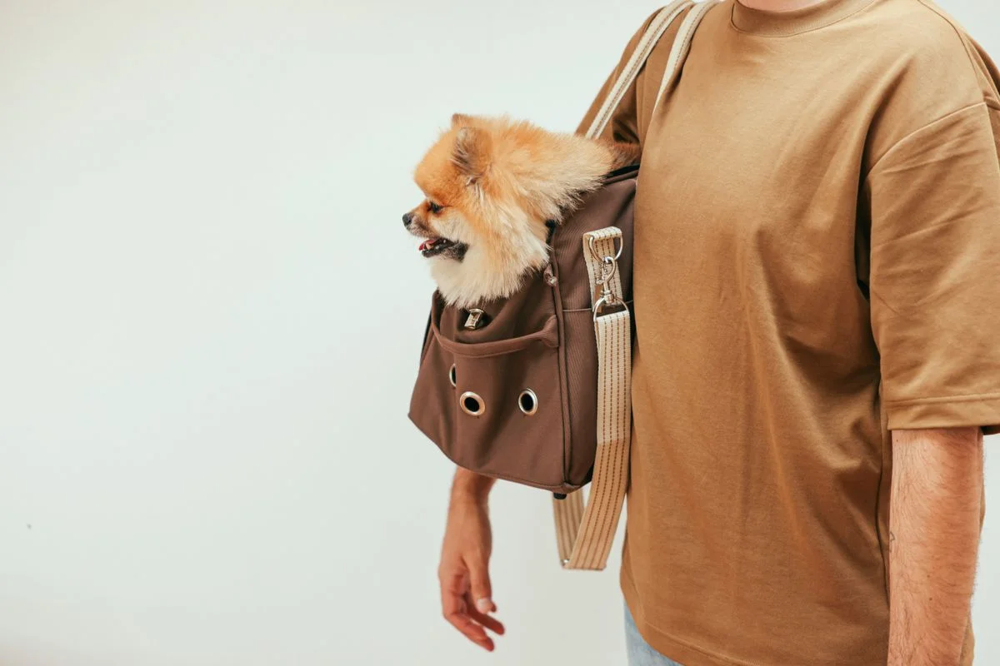

Comedouro Automático para Viagem: Até Quantos Dias É Seguro (e 9 Modelos que Aguentam a Sua Ausência)
Publicado em 21 de agosto de 2026 · Atualizado em 21 de novembro de 2026 · Por Nildo Alves, curadoria de produtos pet no Smart Pet Gadgets · Leitura: 11 min

Imagem ilustrativa gerada por IA.
Este post contém links de afiliado. Podemos receber uma comissão em compras feitas através deles, sem custo adicional para você.
Resposta curta: o comedouro automático guarda ração para semanas, mas o pet não deve passar mais de 24 horas sem alguém em casa. Para um gato adulto saudável, comedouro, água de sobra e câmera resolvem uma noite. No fim de semana, é preciso visita diária. Cachorro, filhote e pet idoso ou doente precisam de alguém por perto antes disso. Para viajar, o modelo que mais ajuda é o Newpet 5L com câmera: você vê o pet pelo celular, e ele continua soltando ração com pilhas se faltar luz (R$ 468 no Mercado Livre em 21/11/2026).
Newpet 5L com câmera: veja o pet comendo pelo app, com visão noturna e pilha reserva.Link de afiliado — sem custo extra para você.
Quantos Dias o Pet Pode Ficar Sozinho com Comedouro Automático?
A pergunta tem duas partes. A ração dura muito: até um comedouro de 2 L alimenta um gato por cerca de 20 dias. O limite real é a supervisão: alguém precisa ver se o pet está comendo, se tem água limpa, se a caixa de areia está usável e se o aparelho não travou. As referências veterinárias apontam na mesma direção:
O PetMD diz que um gato adulto saudável pode ficar de 8 a 12 horas sozinho e não recomenda deixá-lo dias sem cuidado diário.
O Catster cita 24 horas como o máximo aceito pela maioria dos profissionais.
Uma comportamentalista ouvida pelo Kinship recomenda visita diária mesmo com comedouro automático.
Tempo fora
Gato adulto saudável
Cão adulto saudável
Filhote, idoso ou pet doente
Até 8–12 h (dia de trabalho)
Comedouro e água resolvem
Comedouro e água; passeio antes de sair e ao voltar
Filhote come várias vezes ao dia: alguém deve passar
1 noite (até 24 h)
Comedouro, água de sobra, areia limpa e câmera
Alguém precisa passar para o cão sair e conferir a água
Alguém precisa passar
Fim de semana (2–3 dias)
Comedouro e visita diária
Visitas ao longo do dia, pet sitter ou hotel
Pet sitter ou hotel
4 dias ou mais (feriado, férias)
Pet sitter diário; o comedouro mantém os horários
Hotel ou pet sitter
Hotel, clínica ou sitter com experiência
Ou seja: o comedouro automático não substitui a visita, mas deixa a visita mais simples. Quem passa só precisa conferir a casa e o pet, sem se preocupar com horários de refeição. Para entender melhor quando ele compensa, veja comedouro automático vale a pena?
O Que Pode Dar Errado Enquanto Você Viaja
Estes são os riscos que fazem a diferença entre um comedouro "para o dia a dia" e um comedouro para viagem:
Problema
O que acontece
Como se proteger
Falta de luz
Comedouro só na tomada para de soltar ração
Modelo com pilha ou bateria reserva, com pilhas novas. Gravidade como plano B
Wi-Fi cai
Na maioria dos modelos, as refeições continuam; você perde o aviso e a câmera
Teste em casa: desligue o roteador por algumas horas e veja se a refeição sai
Ração entope
O motor gira e nada sai
Use a mesma ração do teste; câmera ou aviso no app; ração de 2 a 10 mm nos modelos Newpet
Água acaba ou suja
É o risco mais sério: o pet aguenta bem menos tempo sem água do que sem comida
Fonte grande e um segundo pote de água em outro cômodo
Pet não come
Estresse com a ausência; gato pode esconder que está doente
Ração seca pesa perto de 0,6 kg por litro (varia pelo tamanho do grão). Com a porção diária da embalagem, dá para estimar quantos dias cada modelo aguenta:
Reservatório
Ração aproximada
Gato de 4 kg (~60 g/dia)
Cão de 5 kg (~100 g/dia)
Cão de 15 kg (~250 g/dia)
Cão de 30 kg (~400 g/dia)
2 L (Newpet 2L)
1,2 kg
20 dias
12 dias
4 dias
3 dias
5 L (Newpet 5L)
3 kg
50 dias
30 dias
12 dias
7 dias
8 L (BAAKIN, dividido em 2)
4,8 kg
80 dias
48 dias
19 dias
12 dias
10 kg (Fercar)
10 kg
—
100 dias
40 dias
25 dias
As porções são exemplos; use a quantidade indicada na embalagem da ração do seu pet. A conta mostra que, para um fim de semana ou feriado, qualquer modelo da lista tem ração de sobra. O que muda entre eles é se continuam funcionando sem luz, se mostram o pet e se servem dois animais.
Comparativo: 7 Comedouros e 2 Bebedouros para Deixar o Pet Sozinho
Preços consultados no Mercado Livre em 21/11/2026, todos com entrega a partir do Brasil. Confira no link antes de comprar, porque mudam com frequência.
Comedouros Elétricos com Programação: Para Gato e Cão Pequeno ou Médio
Soltam porções medidas em horários fixos, então o pet não come tudo no primeiro dia. Para viagem, a pergunta-chave é o que acontece se a luz cair: os quatro primeiros aceitam pilhas ou bateria; o quinto, não. Se a dúvida é entre ter ou não app, veja comedouro com ou sem Wi-Fi.
#1 — Melhor para viagem
Comedouro Automático Inteligente Newpet 5L com Câmera
O único da lista que junta tudo o que importa longe de casa: câmera para ver se o pet comeu, aviso no celular e pilhas como fonte reserva. Pela descrição, se faltar energia ele continua soltando ração.
Câmera 1080p que inclina 100° na vertical, visão noturna e detecção de movimento
Áudio nos dois sentidos e gravação de voz de 15 s para chamar o pet
Até 15 refeições por dia, porções de 10 g (1 a 20 por refeição)
Wi-Fi 2,4 e 5 GHz, Alexa e Google Assistente; tigela de inox removível
Loja oficial New Pet, entrega Full; nota 5,0 com 21 avaliações
Contras: poucas avaliações ainda; o anúncio cita pilhas AA e AAA em campos diferentes, então confirme o tipo no manual; tem um laser de brincadeira que não faz diferença para comer
Para um gato ou cão pequeno num fim de semana com visita, faz o essencial pelo menor preço da lista entre os elétricos. Funciona na fonte ou com 3 pilhas D, então a refeição sai mesmo se a luz cair.
2 L, cerca de 20 dias de ração para um gato de 4 kg
Porções de cerca de 5 g, de 1 a 40 por refeição; ração de 2 a 10 mm
Gravação de voz; sensor que evita derramar ração
Mais vendido da loja oficial New Pet, +1.000 vendidos; nota 4,8 com 408 avaliações
Contras: a descrição fala em app com Wi-Fi 2,4 GHz, mas a ficha técnica do anúncio marca "sem Wi-Fi". Conte com ele como timer com pilha e trate o app como bônus. Pilhas não inclusas
Divide cada refeição em duas tigelas de inox, para dois gatos ou dois cães pequenos comerem juntos sem disputa. Funciona por USB ou pilhas D, o que dá margem se faltar luz.
5 L de reservatório, com tampa vedada para manter a ração fresca
App Tuya, gravação de voz de 10 s, sensor infravermelho que evita transbordar
Tigelas de aço inox removíveis
Loja oficial, +1.000 vendidos; nota 4,8 com 638 avaliações, a maior da lista
Contras: só 4 refeições por dia; não separa dietas diferentes (a porção é a mesma nas duas tigelas)
O maior elétrico da lista: 8 L divididos em dois compartimentos, cada um com sua tigela, e câmera Wi-Fi. A ficha técnica informa bateria recarregável e alimentação por USB.
Dois compartimentos: dá para usar rações diferentes para cada pet
Câmera Wi-Fi com visão de 160° e gravação de mensagem de 8 s
Garantia de 1 ano do vendedor; entrega Full
Nota 4,8 com 18 avaliações
Contras: vendedor sem loja oficial (+500 vendas); parte da descrição está em espanhol; o anúncio não diz quanto tempo a bateria segura; fonte de 5 V
Comedouro duplo com câmera e app Tuya. Entra na lista para quem tem dois pets e já tem nobreak em casa, porque funciona só na fonte de 5 V: a descrição diz que ele dispensa baterias, então para se faltar luz.
6 L, até 20 porções de 7 a 9 g por refeição; tigelas de inox
Câmera (480p na descrição), alto-falante e microfone
Vendedor MercadoLíder Platinum; nota 5,0 com 23 avaliações
Contras: sem fonte reserva; só Wi-Fi 2,4 GHz; garantia do vendedor de 30 dias; sem entrega Full. Pelo mesmo preço, o BAAKIN tem bateria
Com câmera, dá para confirmar à distância que a ração saiu e que o pet comeu. Foto: Pexels
Comedouros por Gravidade: O Plano B que Não Usa Energia
A ração desce conforme o pet come. Não depende de luz nem de Wi-Fi, mas também não controla a porção: servem para pets que comem só o que precisam. Gato guloso ou cão que devora tudo pode comer a viagem inteira no primeiro dia. São ótimos como reserva ao lado de um elétrico.

#6 — Para cão grande, sem energia
Comedouro Automático 10 kg Fercar
Reservatório de metal para 10 kg de ração, abastecido pela tampa de cima. Para um cão de 30 kg, isso dá cerca de 25 dias, sem tomada, pilha ou app.
Metal, base de 26 x 26 cm; abastecimento pela tampa de cima
+5.000 vendidos; nota 4,8 com 383 avaliações
Contras: não controla porção; não serve para cão que come demais; vendedor sem loja oficial e sem Full
O pet aguenta muito menos tempo sem água do que sem comida, e é a parte que os tutores mais esquecem. Uma referência prática é cerca de 50 ml de água por kg por dia: perto de 200 ml para um gato de 4 kg e 500 ml para um cão de 10 kg. Calor e ração seca aumentam essa conta. Deixe uma fonte grande e um segundo pote em outro cômodo, para o caso de a fonte parar ou o pet virar o pote. A comparação completa está em comedouro e bebedouro automático: precisa dos dois?

#8 — Fonte para a viagem
Bebedouro Fonte Inox 3L com Filtragem de 4 Níveis
Com 3 L e reservatório transparente, segundo o vendedor dura até 14 dias para pets de até 5 kg e 7 dias para pets de até 10 kg, o que bate com a conta de 50 ml/kg. Se a luz cair, a bomba para, mas a água continua na bandeja.
Bandeja de aço inox, filtro de 4 estágios, bomba silenciosa de 5 V bivolt
Vendedor MercadoLíder, +1.000 vendidos, entrega Full; nota 4,9 com 505 avaliações
Contras: limpe a bomba e troque o filtro antes de viajar; marca pouco conhecida
Gato tolera melhor ficar sozinho, mas esconde quando está doente, e um gato que para de comer por alguns dias corre risco de lipidose hepática. Por isso a câmera vale mais no caso dele: mostra se ele foi até o pote. Caixa de areia extra também ajuda, porque muitos gatos deixam de usar a caixa suja.
Cachorro precisa sair para fazer as necessidades, sente mais a ausência do tutor e pode ter ansiedade de separação. Para ele, o comedouro automático é complemento para manter a rotina de quem vai passar em casa, nunca a solução para uma noite fora.
Filhotes e raças muito pequenas comem várias vezes ao dia e não devem pular refeições. Idosos e pets com doença crônica (diabetes, rins) dependem de medicação e horários: nesses casos, fale com o veterinário antes de qualquer viagem.
Cronograma: Como Preparar o Comedouro Antes de Viajar
7 a 10 dias antes
Instale o comedouro no lugar definitivo e use-o em paralelo: uma refeição por dia sai dele, as outras do jeito habitual. O pet se acostuma ao barulho do motor e ao pote novo enquanto você ainda está em casa. Elogie ou faça carinho no momento em que a ração cai, para ele associar o som a algo bom.
3 a 5 dias antes
Passe todas as refeições para o comedouro, com a mesma ração que vai ficar na viagem. Confira se a porção configurada bate com a quantidade da embalagem. Se for usar câmera, teste o app fora de casa, no 4G do celular.
1 a 2 dias antes
Limpe o comedouro e a fonte, coloque pilhas novas e faça 24 horas sem mexer em nada. Durante o teste, desligue o roteador por algumas horas para ver se a refeição sai mesmo sem internet. Veja como fazer a limpeza em como limpar o comedouro automático.

Comece a preparação com uma semana de antecedência para o pet se acostumar sem pressa. Foto: Pexels
Checklist Antes de Sair de Casa
Item
O que conferir
Reservatório de ração
Cheio, com a viagem inteira mais 2 dias de margem
Pilhas ou bateria
Pilhas novas ou bateria carregada; teste tirando da tomada por alguns minutos
Horários
Conferidos e testados por 24 h, inclusive com o roteador desligado
Água
Fonte limpa e cheia, mais um segundo pote em outro cômodo
Câmera e app
Acesso testado pelo 4G; notificações ativadas no celular
Caixa de areia (gato)
Limpa; uma caixa extra se for passar mais de um dia
Pessoa de apoio
Visita combinada a cada 24 h, com a chave e seu contato
Veterinário
Telefone deixado com quem vai passar em casa
Como Escolhemos
Selecionamos modelos com entrega a partir do Brasil no Mercado Livre e avaliamos pelo que importa quando ninguém está em casa: fonte de energia reserva (pilha, bateria ou gravidade), câmera e aviso no app, capacidade, número de pets e reputação de loja e avaliações. Os dados vêm dos anúncios em 21/11/2026; não testamos os aparelhos em casa. Onde o anúncio se contradiz, como na conexão Wi-Fi do Newpet 2L ou no tipo de pilha do Newpet 5L com câmera, avisamos no card. Veja nossa política editorial.
Perguntas Frequentes
Quantos dias o gato pode ficar sozinho com comedouro automático?
A ração pode durar semanas no reservatório, mas o gato não deve ficar mais de 24 horas sem alguém passar em casa. O PetMD fala em 8 a 12 horas para um gato adulto saudável, e o Catster cita 24 horas como o máximo aceito pela maioria dos profissionais. Num fim de semana, use o comedouro e combine uma visita diária para conferir água, caixa de areia e o próprio aparelho.
Posso deixar o cachorro sozinho no fim de semana com comedouro automático?
Não sem ajuda. O comedouro resolve a comida, mas o cão precisa sair para fazer as necessidades, sente mais a ausência do tutor e pode virar o pote de água. Para um fim de semana, combine visitas ao longo do dia, um pet sitter ou hotel. O comedouro continua útil para manter os horários das refeições.
O comedouro automático funciona sem internet?
Na maioria dos modelos com app, os horários ficam gravados no aparelho e as refeições continuam saindo se o Wi-Fi cair. O que você perde é o aviso no celular e a câmera. Confirme no seu modelo antes de viajar: desligue o roteador por algumas horas e veja se a refeição sai no horário.
O que acontece com o comedouro automático se acabar a luz?
Sem fonte reserva, ele para de soltar ração até a energia voltar. Por isso, para viagem, escolha um modelo que aceite pilhas ou tenha bateria, como o Newpet 5L com câmera, o Newpet 2L e o Newpet 5L com duas tigelas, e coloque pilhas novas antes de sair. Os comedouros por gravidade não usam energia.
Qual o melhor comedouro automático para viagem?
Na nossa comparação, o Newpet 5L com câmera: câmera 1080p com visão noturna, pilhas como reserva se faltar luz, Wi-Fi 2,4 e 5 GHz e até 15 refeições por dia, por R$ 468 no Mercado Livre em 21/11/2026. Para gastar menos, o Newpet 2L tem pilha reserva por R$ 238,80; para dois pets, o Newpet 5L com duas tigelas sai por R$ 318,80.
Quanta ração colocar no comedouro automático para 4 dias?
Multiplique a porção diária indicada na embalagem por 4 e acrescente uns 2 dias de margem. Um gato de 4 kg que come 60 g por dia precisa de cerca de 360 g, o que cabe com folga até num comedouro de 2 L, que comporta perto de 1,2 kg de ração seca. A capacidade raramente é o problema; a supervisão diária é.
Com quantos dias de antecedência devo apresentar o comedouro automático ao pet?
Comece de 7 a 10 dias antes da viagem, com uma refeição por dia saindo do comedouro e as outras do jeito habitual. Entre 3 e 5 dias antes, passe todas as refeições para o aparelho. Na véspera, faça um teste de 24 horas sem mexer em nada.
Conclusão
Para viajar tranquilo, pense em três camadas: comida (um comedouro que funcione sem luz), água (fonte grande e um pote reserva) e gente (alguém que passe a cada 24 horas). O comedouro automático cuida da primeira camada muito bem, e com câmera ainda ajuda a vigiar. Mas não substitui a visita. Se for comprar um só, o Newpet 5L com câmera é o que mais ajuda longe de casa; para gastar menos, o Newpet 2L já tem pilha reserva. Para comparar todos os comedouros, não só os de viagem, veja o ranking de comedouro automático para pet.
Link de afiliado: podemos receber uma comissão por compras feitas através deste link, sem custo adicional para você.
NA
Nildo Alves — curadoria de produtos pet no Smart Pet Gadgets. Pesquisa e compara produtos para cães e gatos, cruzando especificações de fabricante com boas práticas veterinárias e dados de mercado.